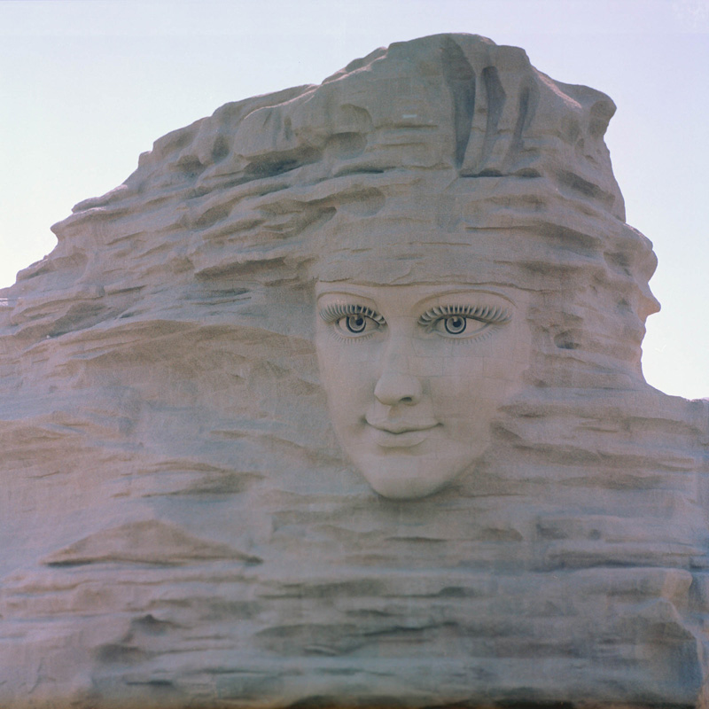
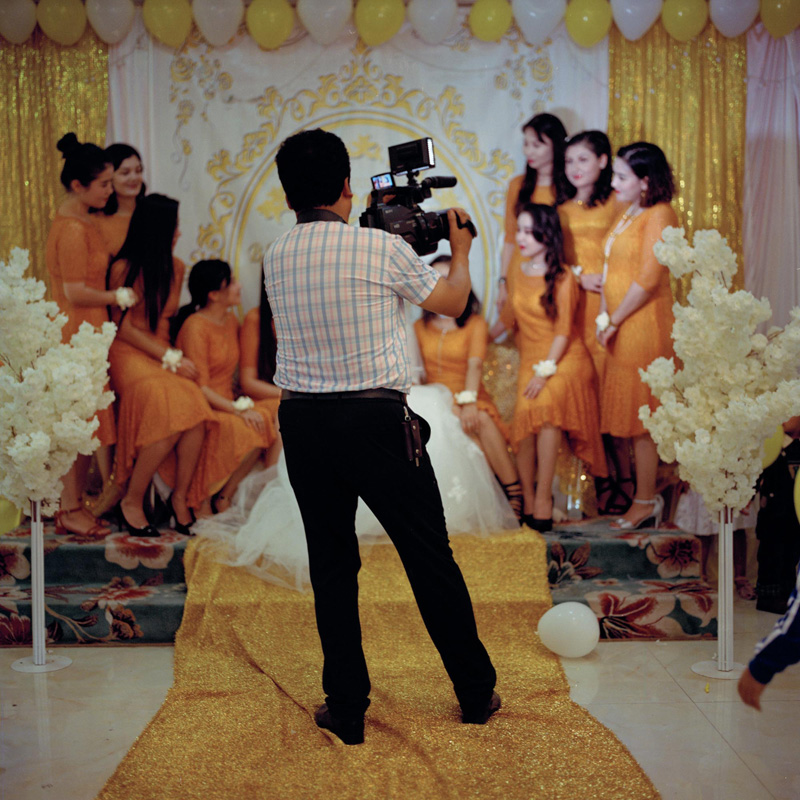
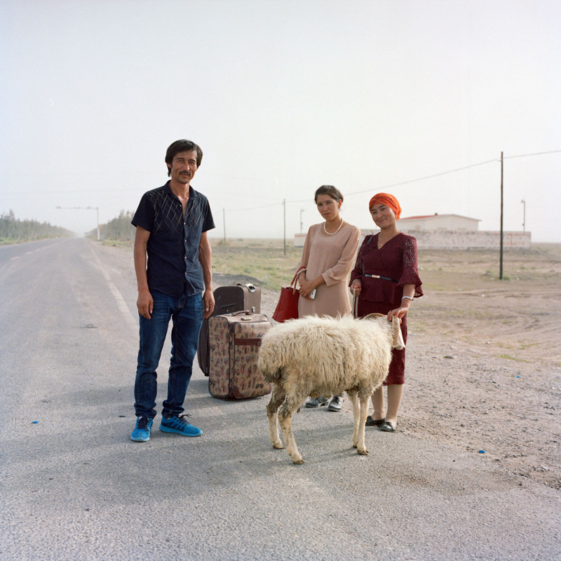

Xinjiang, a vast land located in the northwest of China, is where I was born. It used to known as the Western Regions for hundreds and thousands of years, and is now a place where dozens of ethnic groups inhabit. 'Jiang Nan’ in Mandarin means the south of Xinjiang, the area where this series of photographs were taken.

April_2017. Khotan Xin Jiang. Boyuan Zhang/Alexia Foundation
A stretch of more than 2000 km of the Tarim River, her source begins with the ice mountain in the west. After the branches converged, she runs across the great Taklimakan Desert from west to east, flowing into the Taitema Lake. She is the source of thriving lives in Southern Xinjiang, animating different groups of people and their civilisations generation after generation.

April 2017. Khotan Xin Jiang. The headwork of Qaraqash Deryasi. Boyuan Zhang/Alexia Foundation
August_2017. Khotan Xin Jiang. Uyghur senior cooking. Boyuan Zhang/Alexia Foundation
In my own case, I was born and raised in Xinjiang, but I am also a descendant of the Han ‘immigrants’. Many of my peers, most of whom are regarded as the Post-90s Generation, are the third generation of their family in Xinjiang, with their grandparents’ first settlement due to political and economic reasons. We live in cities, yet long for the distant. The legendary Silk Road, the great explores of Sven Hedding and Marc Aurel Stein, as well as the thousands of people who headed to the south, could all find their roots in the curiosity about this place and the desire for adventures. I want to make this place my homeland, and what I believe what I can do is to engrave the scenes and the faces on the films as well as in my heart.

August_2017. Khotan Xin Jiang. Uyghur wedding. Boyuan Zhang/Alexia Foundation
However, since the Lop people, the Daolang people, and the Keliya people were “discovered” by Sven Hedding in the 1890s, they have gradually abandoned their old fisheries lifestyle. The herald of modern life further blurred the boundaries between them and the Uyghur as well. Uigur and Mandarin spread swiftly because they are indispensable for these people to make a living in cities and towns. Although those villages they used to resident have been able to access electricity, it is the asphalt road that truly bear stories of moving and travelling, of the pursuit for a better life.

August_2017. Khotan Xin Jiang. A wreckage of Santana. Boyuan Zhang/Alexia Foundation

August_2017. Khotan Xin Jiang. The day before the Corban Festival. Boyuan Zhang/Alexia Foundation